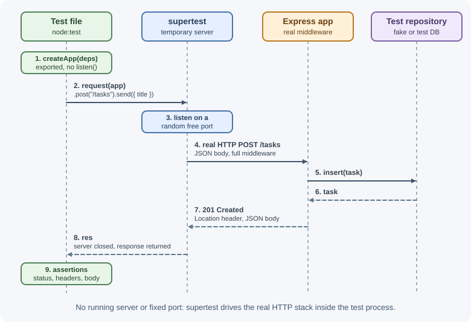
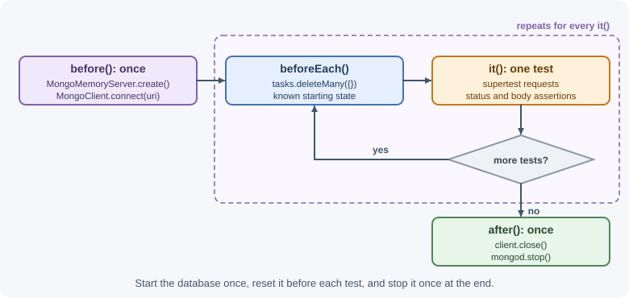

Testing Express APIs¶
Automated tests prove that your API does what its contract promises: the
right status codes, response bodies, headers, and side effects for each
request. This lesson shows how to structure an Express app for testing, how
to send requests with supertest, and how to handle databases, external
services, and authentication in tests.
Why it matters¶
APIs are used by frontends, mobile apps, and other services that break when a field is renamed or a status code changes. Manual testing with Postman does not scale and is not repeated on every change. A good automated suite runs in seconds on every commit and catches regressions before users do.
For general testing theory (test types, pyramids, test doubles), see testing fundamentals.
Real-world usage¶
- Spotify found the classic test pyramid a poor fit for microservices. In Testing of Microservices it describes a "Testing Honeycomb": focus on integration tests, have a few implementation-detail tests, and even fewer fully integrated tests (ideally none). That matches this lesson's advice to test APIs mainly through HTTP with supertest.
- Google published a starting point for balancing test types. Its testing blog post Just Say No to More End-to-End Tests says Google often suggests a 70/20/10 split (70% unit, 20% integration, 10% end-to-end) as a first guess, because end-to-end tests are slow and flaky.
- GitHub Actions documents the CI setup used at the end of this lesson:
its Node.js guide
installs Node with the
setup-nodeaction and runs the project's tests on every push. - Pact exists for teams whose APIs are consumed by other teams. Its documentation describes it as a code-first tool for testing HTTP and message integrations using contract tests, and notes that without contract testing the only way to check that applications work together is expensive and brittle integration tests.
Popular tools: node:test, Vitest, Jest, supertest, mongodb-memory-server,
Testcontainers, nock, MSW, and Pact.
How it works¶
What to test in an API¶
| Level | What it covers | Example | Speed |
|---|---|---|---|
| Unit | One function or service in isolation, dependencies faked | tasksService.create() rejects a past due date |
Very fast |
| Integration | The HTTP layer plus real middleware, often a real test database | POST /api/tasks returns 201 and stores the task |
Fast |
| End-to-end | The deployed system, as a client would use it | Sign up, log in, create a task against a staging URL | Slow |
For APIs, integration tests through HTTP usually give the best value: they exercise routing, validation, middleware, error handling, and serialization together, while still running in milliseconds. Unit-test the complex business rules separately.
Export the app without listening¶
supertest needs the Express app, not a running server. If app.js exports
the app and only server.js calls listen(), tests import app.js and
supertest starts a temporary server on a random port for each request.
See structuring an Express project.

Choosing a test runner¶
| Runner | Notes |
|---|---|
node:test |
Built into Node; no dependency; node --test finds test files |
| Vitest | Fast, Jest-compatible API, native ES modules and TypeScript |
| Jest | Very popular; ES module support needs extra configuration |
The examples use node:test with node:assert/strict. The supertest code is
identical in all three.
Test databases¶
Tests that write data need a database that is isolated and reset:
| Option | How it works | Trade-off |
|---|---|---|
| In-memory fake repository | Inject a fake instead of the real repository | Fastest; does not test real queries |
mongodb-memory-server |
Starts a real mongod process on a free port for the tests |
Real MongoDB behavior; downloads a MongoDB binary on install or first start |
| Testcontainers | Starts a real database in Docker for the test run | Closest to production; needs Docker |
| Dedicated test database | A separate database on a shared server | Simple; must never point at production data |
Whatever you choose, give each test a known starting state: clear collections or tables before each test, or wrap each test in a transaction that is rolled back.

External services¶
Tests must not call real third-party APIs: they are slow, flaky, may cost money, and can have side effects. Replace them by:
- Injecting a fake client into the service (simplest with dependency injection).
- Intercepting HTTP with
nockor MSW (Mock Service Worker), so the code makes real-looking requests that are answered locally.
Fixtures and factories¶
A fixture is fixed test data; a factory is a function that builds valid test data with sensible defaults you can override. Factories keep tests short and make each test state only what it cares about.
Coverage and CI¶
Coverage tools report which lines your tests executed. Use coverage to find untested paths (especially error branches), not as a goal in itself. Run the suite in CI on every pull request so failures block merging; see CI/CD.
Contract testing¶
When other teams consume your API, contract tests check that responses still match an agreed contract: an OpenAPI schema that responses are validated against, or consumer-driven contracts with a tool such as Pact.
When to use and when not to use¶
Use each kind of test where it pays off:
- Integration tests with supertest: for every route's status codes, validation errors, auth rules, and response shapes. This should be the bulk of an API suite.
- Unit tests: for business rules with many cases (pricing, permissions, date logic), where going through HTTP would only add noise.
- Real database in tests (
mongodb-memory-server, Testcontainers): when queries, indexes, transactions, or unique constraints matter. - End-to-end tests: a few critical journeys (sign up, checkout) against a deployed environment.
Avoid:
- Supertest for pure functions: call them directly.
- Real third-party APIs in automated tests: use nock or MSW.
- Large end-to-end suites as the main safety net: they are slow and flaky.
| Approach | Speed | Confidence it gives | Main cost |
|---|---|---|---|
| Unit tests with fakes | Fastest | Logic is correct in isolation | Misses wiring, queries, middleware |
| Supertest + fake repository | Fast | HTTP contract, middleware, validation | Misses real database behavior |
| Supertest + real test database | Medium | Queries and constraints too | Setup and cleanup per test |
| End-to-end against staging | Slow | The whole system works together | Flakiness, environment upkeep |
| Contract tests (Pact, OpenAPI) | Fast | Consumers and provider still agree | Agreeing on and maintaining contracts |
Practical examples¶
The app under test¶
// src/app.js
import express from "express";
export function createApp({ tasksRepository }) {
const app = express();
app.use(express.json());
app.get("/health", (req, res) => res.json({ status: "ok" }));
app.post("/tasks", async (req, res) => {
if (typeof req.body?.title !== "string" || req.body.title.trim() === "") {
return res.status(400).json({ error: "Title is required" });
}
const task = await tasksRepository.insert({ id: crypto.randomUUID(),
title: req.body.title.trim(), done: false });
res.status(201).location(`/tasks/${task.id}`).json(task);
});
app.get("/tasks/:id", async (req, res) => {
const task = await tasksRepository.findById(req.params.id);
if (!task) return res.status(404).json({ error: "Task not found" });
res.json(task);
});
return app;
}
Integration tests with node:test and supertest¶
// test/tasks.test.js
import { describe, it, beforeEach } from "node:test";
import assert from "node:assert/strict";
import request from "supertest";
import { createApp } from "../src/app.js";
function createFakeRepository() {
const items = new Map();
return {
async insert(task) { items.set(task.id, task); return task; },
async findById(id) { return items.get(id) ?? null; },
};
}
describe("tasks API", () => {
let app;
beforeEach(() => {
app = createApp({ tasksRepository: createFakeRepository() }); // fresh state
});
it("GET /health returns ok", async () => {
const res = await request(app).get("/health").expect(200);
assert.deepEqual(res.body, { status: "ok" });
});
it("POST /tasks creates a task", async () => {
const res = await request(app)
.post("/tasks")
.send({ title: " Write tests " }) // sent as JSON
.expect("Content-Type", /json/)
.expect(201);
assert.equal(res.body.title, "Write tests");
assert.equal(res.headers.location, `/tasks/${res.body.id}`);
});
it("POST /tasks rejects a missing title", async () => {
const res = await request(app).post("/tasks").send({}).expect(400);
assert.match(res.body.error, /title/i);
});
it("GET /tasks/:id returns 404 for an unknown id", async () => {
await request(app).get("/tasks/does-not-exist").expect(404);
});
it("created task can be read back", async () => {
const created = await request(app).post("/tasks").send({ title: "A" });
const res = await request(app).get(`/tasks/${created.body.id}`).expect(200);
assert.equal(res.body.title, "A");
});
});
Run with node --test. In a terminal, the default reporter prints
(timings vary):
▶ tasks API
✔ GET /health returns ok (41.5ms)
✔ POST /tasks creates a task (27.8ms)
✔ POST /tasks rejects a missing title (8.2ms)
✔ GET /tasks/:id returns 404 for an unknown id (11.3ms)
✔ created task can be read back (12.0ms)
✔ tasks API (102.3ms)
ℹ tests 5
ℹ suites 1
ℹ pass 5
ℹ fail 0
...
When output is not a terminal (for example in CI logs), Node uses the TAP
reporter instead; choose explicitly with --test-reporter=spec.
The same test in Vitest or Jest¶
import { describe, it, expect } from "vitest"; // Jest provides these globally
import request from "supertest";
it("GET /health returns ok", async () => {
const res = await request(app).get("/health");
expect(res.status).toBe(200);
expect(res.body).toEqual({ status: "ok" });
});
Testing authenticated routes¶
import jwt from "jsonwebtoken";
function authHeader(user = { id: "u1", role: "user" }) {
const token = jwt.sign({ sub: user.id, role: user.role },
process.env.JWT_ACCESS_SECRET, { expiresIn: "5m" });
return { Authorization: `Bearer ${token}` };
}
it("rejects requests without a token", async () => {
await request(app).get("/orders").expect(401);
});
it("forbids non-admins", async () => {
await request(app).delete("/admin/users/42").set(authHeader()).expect(403);
});
it("returns orders for a logged-in user", async () => {
await request(app).get("/orders").set(authHeader()).expect(200);
});
For cookie-based sessions, request.agent(app) keeps cookies between
requests, so you can log in once and then call protected routes:
const agent = request.agent(app);
await agent.post("/login").send({ email: "a@b.com", password: "secret" });
await agent.get("/account").expect(200); // session cookie sent automatically
A real MongoDB with mongodb-memory-server¶
import { before, after, beforeEach } from "node:test";
import { MongoMemoryServer } from "mongodb-memory-server";
import { MongoClient } from "mongodb";
let mongod, client, db;
before(async () => {
mongod = await MongoMemoryServer.create();
client = await MongoClient.connect(mongod.getUri());
db = client.db("test");
});
beforeEach(async () => {
await db.collection("tasks").deleteMany({}); // known starting state
});
after(async () => {
await client.close();
await mongod.stop();
});
Mocking an external API with nock¶
import nock from "nock";
it("converts the price using the rates API", async () => {
nock("https://rates.example.com")
.get("/latest")
.query({ base: "USD" })
.reply(200, { EUR: 0.9 });
const res = await request(app).get("/prices/100?currency=EUR").expect(200);
assert.equal(res.body.amount, 90);
});
With MSW, the equivalent uses a request handler:
import { setupServer } from "msw/node";
// MSW 2 exports these from "msw"; MSW 3 imports them from "msw/http"
import { http, HttpResponse } from "msw";
const server = setupServer(
http.get("https://rates.example.com/latest", () => HttpResponse.json({ EUR: 0.9 }))
);
server.listen(); // call server.close() after the tests
A factory for test data¶
let counter = 0;
export function buildTask(overrides = {}) {
counter += 1;
return { title: `Task ${counter}`, done: false, ...overrides };
}
await request(app).post("/tasks").send(buildTask({ title: "Specific" }));
Coverage and CI¶
node --test --experimental-test-coverage # built-in coverage report
npx vitest run --coverage # Vitest with a coverage provider
A minimal GitHub Actions job:
name: test
on: [push, pull_request]
jobs:
test:
runs-on: ubuntu-latest
steps:
- uses: actions/checkout@v6
- uses: actions/setup-node@v7
with:
node-version: lts/*
cache: npm
- run: npm ci
- run: npm test
Best practices¶
- Test behavior through HTTP: status, body, headers, and side effects.
- Cover failure paths (400, 401, 403, 404, 409, 500), not only the happy path.
- Give every test a fresh, known state; never depend on test order.
- Never let tests touch production databases or real third-party APIs.
- Keep secrets for tests in test-only environment variables.
- Use factories so each test shows only the data that matters to it.
- Run the suite in CI on every pull request.
- Close database connections and servers after tests so the process exits.
In production¶
These problems show up in CI pipelines, where the suite runs on every change.
- The CI job hangs until it times out although all tests passed.
Detect: the test summary is printed but the step never finishes. Cause:
open handles keep the event loop alive: a database client, a
mongodb-memory-serverinstance, an interval, or a server started withlisten(). Fix: close everything inafter()hooks; as a last resort, Node's--test-force-exitflag exits once all tests have finished. - Tests pass locally but fail randomly in CI. Detect: different tests fail
on reruns of the same commit. Cause: shared state;
node --testruns test files in parallel processes by default, so files that share one database collection interfere. Fix: give each file its own database or collection names, reset state inbeforeEach, or run with--test-concurrency=1. - Tests reach the internet. Detect: occasional timeouts or rate-limit
errors from a third-party API in CI logs, or unexpected usage on a vendor
account. Cause: a code path not covered by mocks. Fix: call
nock.disableNetConnect()(allowing only localhost) so any unmocked request fails immediately and visibly. - A test run deletes real data. Detect: data loss in a shared or production database that coincides with a test run. Cause: the test database URL came from the wrong environment variable. Fix: refuse to start the suite unless the connection string points at a clearly named test database, and keep production credentials out of CI test jobs.
- Database tests fail before running in CI. Detect: setup errors while
mongodb-memory-serverdownloads its MongoDB binary, especially on locked-down runners. Cause: the binary download is blocked or slow. Fix: cache the downloaded binary between CI runs or use a database service container instead.
Important terminology¶
- Integration test: A test of several parts working together, such as routing, middleware, and a database.
- supertest: A library that sends HTTP requests to an Express app without a manually started server.
- Test double: A stand-in for a real dependency (fake, stub, mock, spy).
- Fixture: Fixed data or state prepared for a test.
- Factory: A function that builds valid test data with overridable defaults.
- HTTP interception: Catching outgoing requests in tests and answering them locally.
- Contract test: A test that checks an API still matches the agreement its consumers depend on.
Common mistakes and misconceptions¶
- Calling
app.listen()in the module tests import. Ports collide and the test process hangs. - Shared state between tests. A test passes alone but fails in the full suite.
- Only testing success. Most production bugs live in error branches.
- Asserting on whole bodies that contain IDs or timestamps. Assert on the stable fields instead.
- Mocking everything. If the database, validation, and router are all mocked, the test proves little.
- Forgetting
await. The test finishes before the assertion runs and always passes. - "100% coverage means no bugs." Coverage shows what ran, not what was checked.
Revision questions¶
- Why does exporting the app separately from
listen()make testing easier? - What does an integration test through HTTP verify that a unit test does not?
- Compare an in-memory fake, mongodb-memory-server, and Testcontainers for database tests.
- How do you test a route that requires a session cookie?
- Why should tests intercept calls to third-party APIs?
- What is contract testing, and when is it worth adding?